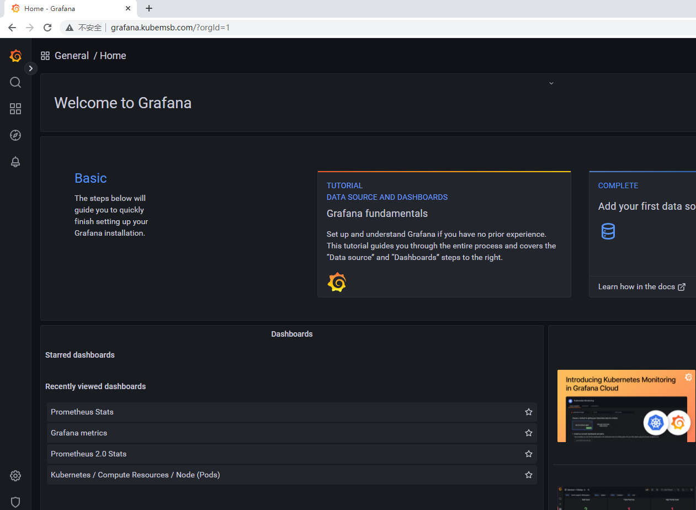

helm部署prometheus监控系统及应用¶
一、helm安装¶
wget https://get.helm.sh/helm-v3.8.2-linux-amd64.tar.gz
tar xf helm-v3.8.2-linux-amd64.tar.gz
mv linux-amd64/helm /bin/helm
# helm version
version.BuildInfo{Version:"v3.8.2", GitCommit:"6e3701edea09e5d55a8ca2aae03a68917630e91b", GitTreeState:"clean", GoVersion:"go1.17.5"}
二、helm添加prometheus仓库¶
helm repo add prometheus-community https://prometheus-community.github.io/helm-charts
helm repo update
# helm search repo prometheus
NAME CHART VERSION APP VERSION DESCRIPTION
prometheus-community/kube-prometheus-stack 37.2.0 0.57.0 kube-prometheus-stack collects Kubernetes manif.
三、使用helm安装prometheus全家桶¶
# helm show values prometheus-community/kube-prometheus-stack > kube-prometheus-stack.yaml-default
# cp kube-prometheus-stack.yaml-default kube-prometheus-stack.yaml
# vim kube-prometheus-stack.yaml
2389 serviceMonitorSelectorNilUsesHelmValues: true
把true修改为false
# helm install kps prometheus-community/kube-prometheus-stack -f kube-prometheus-stack.yaml -n monitoring --create-namespace --version 37.2.0 --debug
kubectl --namespace monitoring get pods -l "release=kps"
# kubectl get svc -n monitoring
NAME TYPE CLUSTER-IP EXTERNAL-IP PORT(S) AGE
alertmanager-operated ClusterIP None <none> 9093/TCP,9094/TCP,9094/UDP 23m
kps-grafana ClusterIP 10.96.1.75 <none> 80/TCP 24m
kps-kube-prometheus-stack-alertmanager ClusterIP 10.96.0.115 <none> 9093/TCP 24m
kps-kube-prometheus-stack-operator ClusterIP 10.96.0.29 <none> 443/TCP 24m
kps-kube-prometheus-stack-prometheus ClusterIP 10.96.0.220 <none> 9090/TCP 24m
kps-kube-state-metrics ClusterIP 10.96.1.192 <none> 8080/TCP 24m
kps-prometheus-node-exporter ClusterIP 10.96.3.21 <none> 9100/TCP 24m
prometheus-operated ClusterIP None <none> 9090/TCP 23m
# kubectl get pods -n monitoring
NAME READY STATUS RESTARTS AGE
alertmanager-kps-kube-prometheus-stack-alertmanager-0 2/2 Running 0 24m
kps-grafana-65f5f8f47d-zwt44 3/3 Running 0 24m
kps-kube-prometheus-stack-operator-667b454c64-zlgq2 1/1 Running 0 24m
kps-kube-state-metrics-7d987f86f9-w5wkq 1/1 Running 0 24m
kps-prometheus-node-exporter-7v4c8 1/1 Running 0 24m
kps-prometheus-node-exporter-9gmjm 1/1 Running 0 24m
kps-prometheus-node-exporter-lmdxp 1/1 Running 0 24m
kps-prometheus-node-exporter-pf5kz 1/1 Running 0 24m
prometheus-kps-kube-prometheus-stack-prometheus-0 2/2 Running 0 24m
四、配置prometheus及grafana访问¶
4.1 prometheus¶
# cat pro.yaml
apiVersion: networking.k8s.io/v1
kind: Ingress
metadata:
name: ingress-prometheus #自定义ingress名称
namespace: monitoring
annotations:
ingressclass.kubernetes.io/is-default-class: "true"
kubernetes.io/ingress.class: nginx
spec:
rules:
- host: prometheus.kubemsb.com # 自定义域名
http:
paths:
- pathType: Prefix
path: "/"
backend:
service:
name: kps-kube-prometheus-stack-prometheus # 对应上面创建的service名称
port:
number: 9090
kubectl apply -f pro.yaml
把prometheus.kubemsb.com域名与ingress nginx controller svc对应的IP进行解析即可访问。
4.2 grafana¶
# cat grafana.yaml
apiVersion: networking.k8s.io/v1
kind: Ingress
metadata:
name: ingress-grafana #自定义ingress名称
namespace: monitoring
annotations:
ingressclass.kubernetes.io/is-default-class: "true"
kubernetes.io/ingress.class: nginx
spec:
rules:
- host: grafana.kubemsb.com # 自定义域名
http:
paths:
- pathType: Prefix
path: "/"
backend:
service:
name: kps-grafana # 对应上面创建的service名称
port:
number: 80
kubectl apply -f grafana.yaml
# kubectl get secret -n monitoring
NAME TYPE DATA AGE
kps-grafana Opaque 3 28m
# kubectl get secret kps-grafana -n monitoring -o yaml
apiVersion: v1
data:
admin-password: cHJvbS1vcGVyYXRvcg==
admin-user: YWRtaW4=
ldap-toml: ""
kind: Secret
metadata:
annotations:
meta.helm.sh/release-name: kps
meta.helm.sh/release-namespace: monitoring
creationTimestamp: "2022-07-14T05:52:02Z"
labels:
app.kubernetes.io/instance: kps
app.kubernetes.io/managed-by: Helm
app.kubernetes.io/name: grafana
app.kubernetes.io/version: 9.0.2
helm.sh/chart: grafana-6.32.2
name: kps-grafana
namespace: monitoring
resourceVersion: "4929"
uid: 98f435cf-4e27-475c-ade9-3562da262f37
type: Opaque
# echo -n "YWRtaW4=" | base64 --decode
admin
# echo -n "cHJvbS1vcGVyYXRvcg==" | base64 --decode
prom-operator



五、使用prometheus监控redis¶
5.1 redis集群部署¶
# helm repo add bitnami https://charts.bitnami.com/bitnami
"bitnami" has been added to your repositories
# helm repo update
# helm search repo redis
NAME CHART VERSION APP VERSION DESCRIPTION
bitnami/redis 17.0.1 7.0.3 Redis(R) is an open source, advanced key-value ...
bitnami/redis-cluster 8.0.0 7.0.3 Redis(R) is an open source, scalable, distribut...
# helm install redis bitnami/redis --set global.storageClass=managed-nfs-storage --set global.redis.password=root --set architecture=standalone --version 17.0.1 -n redisns --create-namespace --debug
# kubectl get all -n redisns
NAME READY STATUS RESTARTS AGE
pod/redis-master-0 1/1 Running 0 6m19s
NAME TYPE CLUSTER-IP EXTERNAL-IP PORT(S) AGE
service/redis-headless ClusterIP None <none> 6379/TCP 6m19s
service/redis-master ClusterIP 10.96.3.75 <none> 6379/TCP 6m19s
NAME READY AGE
statefulset.apps/redis-master 1/1 6m19s
# dig -t a redis-headless.redisns.svc.cluster.local @10.96.0.10
5.2 部署redis-exporter¶
# cat d.yaml
apiVersion: apps/v1 # 版本
kind: Deployment # 资源
metadata:
labels:
app: redis-exporter # 标签
name: redis-exporter # deploy的名称
namespace: monitoring # 命名空间
spec:
replicas: 1 # 副本
selector:
matchLabels:
k8s-app: redis-exporter # po标签
strategy: {}
template:
metadata:
labels:
k8s-app: redis-exporter # po标签
spec:
containers:
- image: oliver006/redis_exporter:latest
name: redis-exporter
args: ["-redis.addr", "redis://redis-headless.redisns.svc.cluster.local:6379", "-redis.password", "root"]
ports:
- containerPort: 9121 # 默认暴露的端口号
name: http
kubectl apply -f d.yaml
# kubectl get deployment -n monitoring
NAME READY UP-TO-DATE AVAILABLE AGE
kps-grafana 1/1 1 1 57m
kps-kube-prometheus-stack-operator 1/1 1 1 57m
kps-kube-state-metrics 1/1 1 1 57m
redis-exporter 1/1 1 1 22s
# cat svc.yaml
apiVersion: v1
kind: Service
metadata:
name: redis-exporter
namespace: monitoring
labels:
k8s-app: redis-exporter
spec:
ports:
- port: 9121
protocol: TCP
name: http
selector:
k8s-app: redis-exporter
type: ClusterIP
# kubectl apply -f svc.yaml
# kubectl get svc -n monitoring
NAME TYPE CLUSTER-IP EXTERNAL-IP PORT(S) AGE
.....
redis-exporter ClusterIP 10.96.2.78 <none> 9121/TCP 8s
curl 10.96.2.78:9121/metrics | tail -1
...
redis_uptime_in_seconds 881
# cat sm.yaml
apiVersion: monitoring.coreos.com/v1
kind: ServiceMonitor
metadata:
name: redis-exporter
namespace: monitoring
labels:
k8s-app: redis-exporter
spec:
endpoints:
- interval: 10s
port: http # 这个是port 对应 Service.spec.ports.name
scheme: http
jobLabel: k8s-app
selector:
matchLabels:
k8s-app: redis-exporter # 跟 svc 的 lables 保持一致
namespaceSelector:
matchNames:
- monitoring # svc的命名空间
# kubectl apply -f sm.yaml
# kubectl get servicemonitor -n monitoring
NAME AGE
......
redis-exporter 46s


helm部署prometheus监控系统及应用¶
一、helm安装¶
wget https://get.helm.sh/helm-v3.8.2-linux-amd64.tar.gz
tar xf helm-v3.8.2-linux-amd64.tar.gz
mv linux-amd64/helm /bin/helm
# helm version
version.BuildInfo{Version:"v3.8.2", GitCommit:"6e3701edea09e5d55a8ca2aae03a68917630e91b", GitTreeState:"clean", GoVersion:"go1.17.5"}
二、helm添加prometheus仓库¶
helm repo add prometheus-community https://prometheus-community.github.io/helm-charts
helm repo update
# helm search repo prometheus
NAME CHART VERSION APP VERSION DESCRIPTION
prometheus-community/kube-prometheus-stack 37.2.0 0.57.0 kube-prometheus-stack collects Kubernetes manif.
三、使用helm安装prometheus全家桶¶
# helm show values prometheus-community/kube-prometheus-stack > kube-prometheus-stack.yaml-default
# cp kube-prometheus-stack.yaml-default kube-prometheus-stack.yaml
# vim kube-prometheus-stack.yaml
2389 serviceMonitorSelectorNilUsesHelmValues: true
把true修改为false
# helm install kps prometheus-community/kube-prometheus-stack -f kube-prometheus-stack.yaml -n monitoring --create-namespace --version 37.2.0 --debug
kubectl --namespace monitoring get pods -l "release=kps"
# kubectl get svc -n monitoring
NAME TYPE CLUSTER-IP EXTERNAL-IP PORT(S) AGE
alertmanager-operated ClusterIP None <none> 9093/TCP,9094/TCP,9094/UDP 23m
kps-grafana ClusterIP 10.96.1.75 <none> 80/TCP 24m
kps-kube-prometheus-stack-alertmanager ClusterIP 10.96.0.115 <none> 9093/TCP 24m
kps-kube-prometheus-stack-operator ClusterIP 10.96.0.29 <none> 443/TCP 24m
kps-kube-prometheus-stack-prometheus ClusterIP 10.96.0.220 <none> 9090/TCP 24m
kps-kube-state-metrics ClusterIP 10.96.1.192 <none> 8080/TCP 24m
kps-prometheus-node-exporter ClusterIP 10.96.3.21 <none> 9100/TCP 24m
prometheus-operated ClusterIP None <none> 9090/TCP 23m
# kubectl get pods -n monitoring
NAME READY STATUS RESTARTS AGE
alertmanager-kps-kube-prometheus-stack-alertmanager-0 2/2 Running 0 24m
kps-grafana-65f5f8f47d-zwt44 3/3 Running 0 24m
kps-kube-prometheus-stack-operator-667b454c64-zlgq2 1/1 Running 0 24m
kps-kube-state-metrics-7d987f86f9-w5wkq 1/1 Running 0 24m
kps-prometheus-node-exporter-7v4c8 1/1 Running 0 24m
kps-prometheus-node-exporter-9gmjm 1/1 Running 0 24m
kps-prometheus-node-exporter-lmdxp 1/1 Running 0 24m
kps-prometheus-node-exporter-pf5kz 1/1 Running 0 24m
prometheus-kps-kube-prometheus-stack-prometheus-0 2/2 Running 0 24m
四、配置prometheus及grafana访问¶
4.1 prometheus¶
# cat pro.yaml
apiVersion: networking.k8s.io/v1
kind: Ingress
metadata:
name: ingress-prometheus #自定义ingress名称
namespace: monitoring
annotations:
ingressclass.kubernetes.io/is-default-class: "true"
kubernetes.io/ingress.class: nginx
spec:
rules:
- host: prometheus.kubemsb.com # 自定义域名
http:
paths:
- pathType: Prefix
path: "/"
backend:
service:
name: kps-kube-prometheus-stack-prometheus # 对应上面创建的service名称
port:
number: 9090
kubectl apply -f pro.yaml
把prometheus.kubemsb.com域名与ingress nginx controller svc对应的IP进行解析即可访问。
4.2 grafana¶
# cat grafana.yaml
apiVersion: networking.k8s.io/v1
kind: Ingress
metadata:
name: ingress-grafana #自定义ingress名称
namespace: monitoring
annotations:
ingressclass.kubernetes.io/is-default-class: "true"
kubernetes.io/ingress.class: nginx
spec:
rules:
- host: grafana.kubemsb.com # 自定义域名
http:
paths:
- pathType: Prefix
path: "/"
backend:
service:
name: kps-grafana # 对应上面创建的service名称
port:
number: 80
kubectl apply -f grafana.yaml
# kubectl get secret -n monitoring
NAME TYPE DATA AGE
kps-grafana Opaque 3 28m
# kubectl get secret kps-grafana -n monitoring -o yaml
apiVersion: v1
data:
admin-password: cHJvbS1vcGVyYXRvcg==
admin-user: YWRtaW4=
ldap-toml: ""
kind: Secret
metadata:
annotations:
meta.helm.sh/release-name: kps
meta.helm.sh/release-namespace: monitoring
creationTimestamp: "2022-07-14T05:52:02Z"
labels:
app.kubernetes.io/instance: kps
app.kubernetes.io/managed-by: Helm
app.kubernetes.io/name: grafana
app.kubernetes.io/version: 9.0.2
helm.sh/chart: grafana-6.32.2
name: kps-grafana
namespace: monitoring
resourceVersion: "4929"
uid: 98f435cf-4e27-475c-ade9-3562da262f37
type: Opaque
# echo -n "YWRtaW4=" | base64 --decode
admin
# echo -n "cHJvbS1vcGVyYXRvcg==" | base64 --decode
prom-operator
五、使用prometheus监控redis¶
5.1 使用helm实现redis集群部署¶
# helm repo add bitnami https://charts.bitnami.com/bitnami
"bitnami" has been added to your repositories
# helm repo update
# helm search repo redis
NAME CHART VERSION APP VERSION DESCRIPTION
bitnami/redis 17.0.1 7.0.3 Redis(R) is an open source, advanced key-value ...
bitnami/redis-cluster 8.0.0 7.0.3 Redis(R) is an open source, scalable, distribut...
# helm install redis bitnami/redis --set global.storageClass=managed-nfs-storage --set global.redis.password=root --set architecture=standalone --version 17.0.1 -n redisns --create-namespace --debug
# kubectl get all -n redisns
NAME READY STATUS RESTARTS AGE
pod/redis-master-0 1/1 Running 0 6m19s
NAME TYPE CLUSTER-IP EXTERNAL-IP PORT(S) AGE
service/redis-headless ClusterIP None <none> 6379/TCP 6m19s
service/redis-master ClusterIP 10.96.3.75 <none> 6379/TCP 6m19s
NAME READY AGE
statefulset.apps/redis-master 1/1 6m19s
# dig -t a redis-headless.redisns.svc.cluster.local @10.96.0.10
5.2 监控方案一：部署redis-exporter及serviceMonitor¶
# cat d.yaml
apiVersion: apps/v1 # 版本
kind: Deployment # 资源
metadata:
labels:
app: redis-exporter # 标签
name: redis-exporter # deploy的名称
namespace: monitoring # 命名空间
spec:
replicas: 1 # 副本
selector:
matchLabels:
k8s-app: redis-exporter # po标签
strategy: {}
template:
metadata:
labels:
k8s-app: redis-exporter # po标签
spec:
containers:
- image: oliver006/redis_exporter:latest
name: redis-exporter
args: ["-redis.addr", "redis://redis-headless.redisns.svc.cluster.local:6379", "-redis.password", "root"]
ports:
- containerPort: 9121 # 默认暴露的端口号
name: http
kubectl apply -f d.yaml
# kubectl get deployment -n monitoring
NAME READY UP-TO-DATE AVAILABLE AGE
kps-grafana 1/1 1 1 57m
kps-kube-prometheus-stack-operator 1/1 1 1 57m
kps-kube-state-metrics 1/1 1 1 57m
redis-exporter 1/1 1 1 22s
# cat svc.yaml
apiVersion: v1
kind: Service
metadata:
name: redis-exporter
namespace: monitoring
labels:
k8s-app: redis-exporter
spec:
ports:
- port: 9121
protocol: TCP
name: http
selector:
k8s-app: redis-exporter
type: ClusterIP
# kubectl apply -f svc.yaml
# kubectl get svc -n monitoring
NAME TYPE CLUSTER-IP EXTERNAL-IP PORT(S) AGE
.....
redis-exporter ClusterIP 10.96.2.78 <none> 9121/TCP 8s
curl 10.96.2.78:9121/metrics | tail -1
...
redis_uptime_in_seconds 881
# cat sm.yaml
apiVersion: monitoring.coreos.com/v1
kind: ServiceMonitor
metadata:
name: redis-exporter
namespace: monitoring
labels:
k8s-app: redis-exporter
spec:
endpoints:
- interval: 10s
port: http # 这个是port 对应 Service.spec.ports.name
scheme: http
jobLabel: k8s-app
selector:
matchLabels:
k8s-app: redis-exporter # 跟 svc 的 lables 保持一致
namespaceSelector:
matchNames:
- monitoring # svc的命名空间
# kubectl apply -f sm.yaml
# kubectl get servicemonitor -n monitoring
NAME AGE
......
redis-exporter 46s
5.3 监控方案二：使用helm部署prometheus redis exporter监控redis¶
监控helm部署的redis
查看服务是否存在
# kubectl get svc -n redisns
NAME TYPE CLUSTER-IP EXTERNAL-IP PORT(S) AGE
redis-headless ClusterIP None <none> 6379/TCP 5d13h
redis-master ClusterIP 10.96.0.228 <none> 6379/TCP 5d13h
查看是否有redis exporter
helm search repo redis
下载prometheus-redis-exporter
# helm fetch prometheus-community/prometheus-redis-exporter
解压prometheus-redis-exporter
# tar xf prometheus-redis-exporter-5.0.0.tgz
进入prometheus-redis-exporter目录
# cd prometheus-redis-exporter/
解析访问链接，确认是否可以访问
# dig -t a redis-headless.redisns.svc.cluster.local @10.96.0.10
修改values.yaml文件，重点看修改部分
49 # If serviceMonitor.multipleTarget is enabled, this configuration is actually not used
50 redisAddress: redis://redis-headless.redisns.svc.cluster.local:6379 配置redis访问地址
51
52 # deployment additional annotations and labels
53 annotations: 把默认｛｝去掉
54 prometheus.io/path: /metrics 默认此位置没有，复制过来即可
55 prometheus.io/port: "9121" 默认此位置没有，复制过来即可
56 prometheus.io/scrape: "true" 默认此位置没有，复制过来即可
...
67 serviceMonitor:
68 # When set true then use a ServiceMonitor to configure scraping
69 enabled: true 默认为false，修改为true
70 multipleTarget: false
71 targets:
72 # for every targets, url and name must be set,
73 # an individual additionalRelabeling can be set for every target
74 - url: "redis://redis-headless.redisns.svc.cluster.local:6379" 添加上面的redis访问地址
75 name: "myold-redis" 设置redis监控名称
76 # - url: "redis://my-redis-cluster:6379"
...
154 auth:
155 # Use password authentication
156 enabled: false
157 # Use existing secret (ignores redisPassword)
158 secret:
159 name: ""
160 key: ""
161 # Redis password (when not stored in a secret)
162 redisPassword: "root" 设置redis访问密码
163 # Redis user (version 6.X and above)
164 redisUser: ""
安装prometheus-redis-exporter
helm install redis-monitor-old ./ -f values.yaml -n monitoring

5.4 使用helm部署prometheus redis exporter监控手动部署的redis¶
单独复制一份prometheus redis exporter即可
5.4 1 redis部署¶
# vim redis.yaml
# cat redis.yaml
apiVersion: v1
kind: ConfigMap
metadata:
name: redis
namespace: test
data:
redis.conf: |+
requirepass redis@passwd
maxmemory 268435456
---
apiVersion: apps/v1
kind: Deployment
metadata:
name: redis
namespace: test
labels:
app: redis
spec:
selector:
matchLabels:
app: redis
template:
metadata:
labels:
app: redis
annotations:
version/date: "20220720"
version/author: "fc"
spec:
containers:
- name: redis
image: redis
imagePullPolicy: Always
command: ["redis-server","/etc/redis/redis.conf"]
ports:
- containerPort: 6379
volumeMounts:
- name: redis-config
mountPath: /etc/redis/redis.conf
subPath: redis.conf
volumes:
- name: redis-config
configMap:
name: redis
items:
- key: redis.conf
path: redis.conf
---
kind: Service
apiVersion: v1
metadata:
name: redis
namespace: test
spec:
selector:
app: redis
ports:
- port: 6379
targetPort: 6379
# kubectl apply -f redis.yaml
# kubectl get all -n test
NAME READY STATUS RESTARTS AGE
pod/redis-75f489d8f4-5gf4r 1/1 Running 0 82m
NAME TYPE CLUSTER-IP EXTERNAL-IP PORT(S) AGE
service/redis ClusterIP 10.96.2.16 <none> 6379/TCP 82m
NAME READY UP-TO-DATE AVAILABLE AGE
deployment.apps/redis 1/1 1 1 82m
NAME DESIRED CURRENT READY AGE
replicaset.apps/redis-75f489d8f4 1 1 1 82m
下载prometheus-redis-exporter
# helm fetch prometheus-community/prometheus-redis-exporter
解压prometheus-redis-exporter
# tar xf prometheus-redis-exporter-5.0.0.tgz
# cd prometheus-redis-exporter/
# vim values.yaml
...
49 # If serviceMonitor.multipleTarget is enabled, this configuration is actually not used
50 redisAddress: redis://redis.test.svc.cluster.local:6379 修改为redis访问地址
51
52 # deployment additional annotations and labels
53 annotations:
54 prometheus.io/path: /metrics 默认没有，复制过来即可
55 prometheus.io/port: "9121" 默认没有，复制过来即可
56 prometheus.io/scrape: "true" 默认没有，复制过来即可
57 labels: {}
...
67 serviceMonitor:
68 # When set true then use a ServiceMonitor to configure scraping
69 enabled: true 默认为false,修改为true
70 multipleTarget: false
71 targets:
72 # for every targets, url and name must be set,
73 # an individual additionalRelabeling can be set for every target
74 - url: "redis://redis.test.svc.cluster.local:6379" 默认没有开启，添加访问链接后开启即可
75 name: "my-redis" 默认没有开启，开启即可，可以随意起名
...
154 auth:
155 # Use password authentication
156 enabled: true
157 # Use existing secret (ignores redisPassword)
158 secret:
159 name: ""
160 key: ""
161 # Redis password (when not stored in a secret)
162 redisPassword: "redis@passwd" 密码要与redis配置文件中密码保持一致即可
163 # Redis user (version 6.X and above)
164 redisUser: ""
helm install redis-monitor ./ -f values.yaml -n monitoring

5.5 实现helm部署prometheus redis exporter监控helm部署的redis集群¶
# helm search repo redis
NAME CHART VERSION APP VERSION DESCRIPTION
bitnami/redis 17.0.1 7.0.3 Redis(R) is an open source, advanced key-value ...
bitnami/redis-cluster 8.0.0 7.0.3 Redis(R) is an open source, scalable, distribut...
# helm install redis bitnami/redis --set global.storageClass=managed-nfs-storage --set global.redis.password=root --version 17.0.1 -n redisns --create-namespace --debug
下载prometheus-redis-exporter
# helm pull prometheus-community/prometheus-redis-exporter
解压prometheus-redis-exporter
# tar xf prometheus-redis-exporter-5.0.0.tgz
进入prometheus-redis-exporter目录
cd prometheus-redis-exporter/
# vim values.yaml
...
49 # If serviceMonitor.multipleTarget is enabled, this configuration is actually not used
50 redisAddress: redis://redis.redisnew.svc.cluster.local:6379 修改为redis访问地址
51
52 # deployment additional annotations and labels
53 annotations:
54 prometheus.io/path: /metrics 默认没有，复制过来即可
55 prometheus.io/port: "9121" 默认没有，复制过来即可
56 prometheus.io/scrape: "true" 默认没有，复制过来即可
57 labels: {}
...
67 serviceMonitor:
68 # When set true then use a ServiceMonitor to configure scraping
69 enabled: true 默认为false,修改为true
70 multipleTarget: false
71 targets:
72 # for every targets, url and name must be set,
73 # an individual additionalRelabeling can be set for every target
74 - url: "redis://redis.redisnew.svc.cluster.local:6379" 默认没有开启，添加访问链接后开启即可
75 name: "my-redis" 默认没有开启，开启即可，可以随意起名
...
154 auth:
155 # Use password authentication
156 enabled: true
157 # Use existing secret (ignores redisPassword)
158 secret:
159 name: ""
160 key: ""
161 # Redis password (when not stored in a secret)
162 redisPassword: "root" 密码要与redis配置文件中密码保持一致即可
163 # Redis user (version 6.X and above)
164 redisUser: ""
# helm install redisnew-exporter ./ -f values.yaml -n monitoring
六、使用prometheus监控mysql¶
6.1 mysql部署¶
# vim mysql.yaml
# cat mysql.yaml
apiVersion: apps/v1
kind: Deployment
metadata:
name: mysql
namespace: test
spec:
selector:
matchLabels:
app: mysql
template:
metadata:
labels:
app: mysql
spec:
containers:
- image: mysql
name: mysql
env:
- name: MYSQL_ROOT_PASSWORD
value: root@mysql
---
apiVersion: v1
kind: Service
metadata:
name: mysql
namespace: test
spec:
type: ClusterIP
ports:
- port: 3306
targetPort: 3306
selector:
app: mysql
# kubectl apply -f mysql.yaml
# kubectl get pods -n test
NAME READY STATUS RESTARTS AGE
mysql-98797c6bf-jpwvj 1/1 Running 0 72s
# dig -t a mysql.test.svc.cluster.local @10.96.0.10
连接信息汇总
host: mysql.test.svc.cluster.local
port: 3306
user: root
passwd: root@mysql
6.2 mysql exporter部署及验证¶
# helm pull prometheus-community/prometheus-mysql-exporter
# tar xf prometheus-mysql-exporter-1.8.1.tgz
# cd prometheus-mysql-exporter
# vim values.yaml
20 serviceMonitor:
21 # enabled should be set to true to enable prometheus-operator discovery of this service
22 enabled: true 默认为false，修改为true
23 # interval is the interval at which metrics should be scraped
24 interval: 30s 开启
25 # scrapeTimeout is the timeout after which the scrape is ended
26 scrapeTimeout: 10s 开启
27 #namespace: monitoring
123 # mysql connection params which build the DATA_SOURCE_NAME env var of the docker container
124 mysql:
125 db: ""
126 host: "mysql.test.svc.cluster.local"
127 param: ""
128 pass: "root@mysql"
129 port: 3306
130 protocol: ""
131 user: "root"
# helm install prometheus-mysql-exporter ./ -f values.yaml -n monitoring
6.3 在prometheus web页面中Graph中查看¶
6.4 在grafana中添加dashboard¶

七、使用prometheus监控kafka¶
7.1 kafak部署¶
7.1.1 下载chart包¶
# helm repo add bitnami https://charts.bitnami.com/bitnami
# helm repo update
# helm search repo zookeeper
NAME CHART VERSION APP VERSION DESCRIPTION
bitnami/zookeeper 10.0.2 3.8.0 Apache ZooKeeper provides a reliable, centraliz...
# helm search repo kafka
NAME CHART VERSION APP VERSION DESCRIPTION
bitnami/kafka 18.0.3 3.2.0 Apache Kafka is a distributed streaming platfor...
7.1.2 部署zookeeper¶
# mkdir kafkadir
# cd kafkadir
# helm pull bitnami/zookeeper
# ls
zookeeper-10.0.2.tgz
# tar xf zookeeper-10.0.2.tgz
# ls
zookeeper zookeeper-10.0.2.tgz
# cd zookeeper/
# ls
Chart.lock charts Chart.yaml README.md templates values.yaml
主要配置时区、持久化存储、副本数等
首次部署时直接修改values中的配置，方便后期更新（upgrade）,也可以使用--set设置
# vim values.yaml
# 手动添加时区
# 改模板没有extraEnvVars字段，直接复制以下3行内容，部署后，可通过logs查看时区是否正确
extraEnvVars:
- name: TZ
value: "Asia/Shanghai"
# 允许任意用户连接（默认开启）
allowAnonymousLogin: true
# 关闭认证（默认关闭）
auth:
enable: false
# 修改副本数
replicaCount: 3
# 配置持久化存储
persistence:
enabled: true
storageClass: "managed-nfs-storage"
accessModes:
- ReadWriteOnce
# vim values.yaml
97 auth:
98 client:
99 ## @param auth.client.enabled Enable ZooKeeper client-server authentication. It uses SASL/Digest-MD5
100 ##
101 enabled: false 使用默认值就可以了
...
238 replicaCount: 3 默认为1，修改为3
...
添加时区
219 extraEnvVars:
220 - name: TZ
221 value: "Asia/Shanghai"
...
581 persistence:
582 ## @param persistence.enabled Enable ZooKeeper data persistence using PVC. If false, use emptyDir
583 ##
584 enabled: true
585 ## @param persistence.existingClaim Name of an existing PVC to use (only when deploying a single replica)
586 ##
587 existingClaim: ""
588 ## @param persistence.storageClass PVC Storage Class for ZooKeeper data volume
589 ## If defined, storageClassName: <storageClass>
590 ## If set to "-", storageClassName: "", which disables dynamic provisioning
591 ## If undefined (the default) or set to null, no storageClassName spec is
592 ## set, choosing the default provisioner. (gp2 on AWS, standard on
593 ## GKE, AWS & OpenStack)
594 ##
595 storageClass: "nfs-client" 添加一个存储类
596 ## @param persistence.accessModes PVC Access modes
597 ##
598 accessModes:
599 - ReadWriteOnce
600 ## @param persistence.size PVC Storage Request for ZooKeeper data volume
601 ##
602 size: 8Gi
603 ## @param persistence.annotations Annotations for the PVC
...
708 serviceMonitor:
709 ## @param metrics.serviceMonitor.enabled Create ServiceMonitor Resource for scraping metrics using Prometheus Operator
710 ##
711 enabled: true 默认为false，修改为true
712 ## @param metrics.serviceMonitor.namespace Namespace for the ServiceMonitor Resource (defaults to the Release Namespace)
713 ##
714 namespace: "kafka" 默认为空，修改为test
715 ## @param metrics.serviceMonitor.interval Interval at which metrics should be scraped.
716 ## ref: https://github.com/coreos/prometheus-operator/blob/master/Documentation/api.md#endpoint
717 ##
718 interval: "10" 默认为空，修改为10
719 ## @param metrics.serviceMonitor.scrapeTimeout Timeout after which the scrape is ended
720 ## ref: https://github.com/coreos/prometheus-operator/blob/master/Documentation/api.md#endpoint
721 ##
722 scrapeTimeout: "20" 默认为空，修改为20
# kubectl create ns kafka
# helm install zookeeper ./ -f values.yaml -n kafka
# kubectl get pods -n kafka
NAME READY STATUS RESTARTS AGE
zookeeper-0 1/1 Running 0 62s
zookeeper-1 1/1 Running 0 62s
zookeeper-2 1/1 Running 0 62s
[root@nfsserver ~]# ls /sdb
kafka-data-zookeeper-1-pvc-9dbb13e2-3174-429b-90aa-3884459aaa23
kafka-data-zookeeper-2-pvc-0cffe920-2f16-4955-b80e-04e8d1571c82
kafka-data-zookeeper-0-pvc-a6ed8ed3-058a-4260-be1f-12d1be78b2a0
# kubectl get svc -n kafka
NAME TYPE CLUSTER-IP EXTERNAL-IP PORT(S) AGE
zookeeper ClusterIP 10.96.2.24 <none> 2181/TCP,2888/TCP,3888/TCP 2m9s
zookeeper-headless ClusterIP None <none> 2181/TCP,2888/TCP,3888/TCP 2m9s
# dig -t a zookeeper-headless.kafka.svc.cluster.local @10.96.0.10
# kubectl get ns
NAME STATUS AGE
kafka Active 53m
[root@k8s-master01 kafkadir]# kubectl get pods -n kafka
NAME READY STATUS RESTARTS AGE
zookeeper-0 1/1 Running 0 52m
zookeeper-1 1/1 Running 0 52m
zookeeper-2 1/1 Running 0 52m
查看zookeeper状态
[root@k8s-master01 kafkadir]# kubectl exec -it zookeeper-0 -n kafka -- bash
@zookeeper-0:/$ zkServer.sh status
/opt/bitnami/java/bin/java
ZooKeeper JMX enabled by default
Using config: /opt/bitnami/zookeeper/bin/../conf/zoo.cfg
Client port found: 2181. Client address: localhost. Client SSL: false.
Mode: follower
7.1.3 部署kafka¶
拉取kafka chart包
# helm pull bitnami/kafka
# ls
kafka-18.0.3.tgz
# tar xf kafka-18.0.3.tgz
# cd kafka
7.1.3.1 基础配置¶
设置时区、副本数、持久化存储、zookeeper连接等。
# vim values.yaml
412 extraEnvVars:
413 - name: TZ
414 value: "Asia/Shanghai"
...
426 replicaCount: 3
...
890 persistence:
891 ## @param persistence.enabled Enable Kafka data persistence using PVC, note that ZooKeeper persistence is unaffected
892 ##
893 enabled: true
894 ## @param persistence.existingClaim A manually managed Persistent Volume and Claim
895 ## If defined, PVC must be created manually before volume will be bound
896 ## The value is evaluated as a template
897 ##
898 existingClaim: ""
899 ## @param persistence.storageClass PVC Storage Class for Kafka data volume
900 ## If defined, storageClassName: <storageClass>
901 ## If set to "-", storageClassName: "", which disables dynamic provisioning
902 ## If undefined (the default) or set to null, no storageClassName spec is
903 ## set, choosing the default provisioner.
904 ##
905 storageClass: "nfs-client" 指定存储类
906 ## @param persistence.accessModes Persistent Volume Access Modes
907 ##
908 accessModes:
909 - ReadWriteOnce
910 ## @param persistence.size PVC Storage Request for Kafka data volume
911 ##
912 size: 8Gi
913 ## @param persistence.annotations Annotations for the PVC
...
1638 zookeeper:
1639 ## @param zookeeper.enabled Switch to enable or disable the ZooKeeper helm chart
1640 ##
1641 enabled: false 默认为true，修改为false,不使用内部zookeeper
1642 ## @param zookeeper.replicaCount Number of ZooKeeper nodes
...
1681 externalZookeeper:
1682 ## @param externalZookeeper.servers List of external zookeeper servers to use. Typically used in combination with 'zookeeperChrootPath'.
1683 ##
1684 servers: zookeeper 使用外部的zookeeper
7.1.3.2 高可用配置¶
设置默认分区、默认副本数、日志过期时间，需要根据kafka节点数设定。
# vim values.yaml
允许删除topic
138 deleteTopicEnable: true 默认为false
154 ## @param logRetentionHours The minimum age of a log file to be eligible for deletion due to age
默认日志保留时间，为一周
156 logRetentionHours: 168
166 ## @param defaultReplicationFactor Default replication factors for automatically created topics
自动创建topic默认的副本数
168 defaultReplicationFactor: 2
169 ## @param offsetsTopicReplicationFactor The replication factor for the offsets topic
用于配置offset记录的topic的partition的副本个数
171 offsetsTopicReplicationFactor: 2
172 ## @param transactionStateLogReplicationFactor The replication factor for the transaction topic
事务主题的复制因子
174 transactionStateLogReplicationFactor: 2
175 ## @param transactionStateLogMinIsr Overridden min.insync.replicas config for the transaction topic
177 transactionStateLogMinIsr: 2 默认为1修改为2
184 ## @param numPartitions The default number of log partitions per topic
新建Topic时默认的分区数
186 numPartitions: 3
7.1.3.3 kafka部署¶
# helm install kafka ./ -f values.yaml -n kafka
输出内容：
NAME: kafka
LAST DEPLOYED: Wed Jul 20 18:59:51 2022
NAMESPACE: kafka
STATUS: deployed
REVISION: 1
TEST SUITE: None
NOTES:
CHART NAME: kafka
CHART VERSION: 18.0.3
APP VERSION: 3.2.0
** Please be patient while the chart is being deployed **
Kafka can be accessed by consumers via port 9092 on the following DNS name from within your cluster:
kafka.kafka.svc.cluster.local
Each Kafka broker can be accessed by producers via port 9092 on the following DNS name(s) from within your cluster:
kafka-0.kafka-headless.kafka.svc.cluster.local:9092
kafka-1.kafka-headless.kafka.svc.cluster.local:9092
kafka-2.kafka-headless.kafka.svc.cluster.local:9092
To create a pod that you can use as a Kafka client run the following commands:
kubectl run kafka-client --restart='Never' --image docker.io/bitnami/kafka:3.2.0-debian-11-r12 --namespace kafka --command -- sleep infinity
kubectl exec --tty -i kafka-client --namespace kafka -- bash
PRODUCER:
kafka-console-producer.sh \
--broker-list kafka-0.kafka-headless.kafka.svc.cluster.local:9092,kafka-1.kafka-headless.kafka.svc.cluster.local:9092,kafka-2.kafka-headless.kafka.svc.cluster.local:9092 \
--topic test
CONSUMER:
kafka-console-consumer.sh \
--bootstrap-server kafka.kafka.svc.cluster.local:9092 \
--topic test \
--from-beginning
7.1.4 kafka调试¶
7.1.4.1 查询与创建topic¶
进入pod
# kubectl exec -it kafka-0 -n kafka -- bash
创建topic,3分区+2副本,注意kafka的版本，本次使用的是3.2.0
@kafka-0:/$ kafka-topics.sh --bootstrap-server kafka.kafka.svc.cluster.local:9092 --topic test001 --create --partitions 3 --replication-factor 2
Created topic test001.
列出topic
@kafka-0:/$ kafka-topics.sh --list --bootstrap-server kafka.kafka.svc.cluster.local:9092
test001
查看topic详情
@kafka-0:/$ kafka-topics.sh --bootstrap-server kafka.kafka.svc.cluster.local:9092 --describe --topic test001
输入结果：
Topic: test001 TopicId: J5e8gTjPRV2b49NUWYwNaA PartitionCount: 3 ReplicationFactor: 2 Configs: flush.ms=1000,segment.bytes=1073741824,flush.messages=10000,max.message.bytes=1000012,retention.bytes=1073741824
Topic: test001 Partition: 0 Leader: 1 Replicas: 1,2 Isr: 1,2
Topic: test001 Partition: 1 Leader: 0 Replicas: 0,1 Isr: 0,1
Topic: test001 Partition: 2 Leader: 2 Replicas: 2,0 Isr: 2,0
7.1.4.2 生产者与消费者¶
在一个窗口中打开生产者创建数据
@kafka-0:/$ kafka-console-producer.sh --broker-list kafka:9092 --topic test001
>kubemsb 输入kubemsb后回车
在另一个窗口中使用消费者访问数据
# kubectl exec -it kafka-0 -n kafka -- bash
@kafka-0:/$ kafka-console-consumer.sh --bootstrap-server kafka:9092 --from-beginning --topic test001
kubemsb 显示
7.1.4.3 修改与删除topic¶
修改topic配置：增加分区至4个（分区只可增不可减）
@kafka-0:/$ kafka-topics.sh --alter --bootstrap-server kafka:9092 --partitions 4 --topic test001
查看增加后的结果
@kafka-0:/$ kafka-topics.sh --describe --bootstrap-server kafka:9092 --topic test001
输出结果：
Topic: test001 TopicId: J5e8gTjPRV2b49NUWYwNaA PartitionCount: 4 ReplicationFactor: 2 Configs: flush.ms=1000,segment.bytes=1073741824,flush.messages=10000,max.message.bytes=1000012,retention.bytes=1073741824
Topic: test001 Partition: 0 Leader: 1 Replicas: 1,2 Isr: 1,2
Topic: test001 Partition: 1 Leader: 0 Replicas: 0,1 Isr: 0,1
Topic: test001 Partition: 2 Leader: 2 Replicas: 2,0 Isr: 2,0
Topic: test001 Partition: 3 Leader: 1 Replicas: 1,2 Isr: 1,2
删除topic（需要设置deleteTopicEnable: true）
@kafka-0:/$ kafka-topics.sh --delete --bootstrap-server kafka:9092 --topic test001
验证是否删除
@kafka-0:/$ kafka-topics.sh --list --bootstrap-server kafka.kafka.svc.cluster.local:9092
__consumer_offsets
7.2 kafka exporter部署及验证¶
监控kafka之前可以创建topic
获取kafka-exporter
# helm search repo kafka
NAME CHART VERSION APP VERSION DESCRIPTION
prometheus-community/prometheus-kafka-exporter 1.6.0 v1.4.2 A Helm chart to export the metrics from Kafka i...
# helm pull prometheus-community/prometheus-kafka-exporter
# tar xf prometheus-kafka-exporter-1.6.0.tgz
# ls
prometheus-kafka-exporter
链接kafka信息：
kafka.kafka.svc.cluster.local:9092
# cd prometheus-kafka-exporter
# vim values.yaml
...
8 kafkaServer:
9 #- kafka-server:9092
10 - kafka.kafka.svc.cluster.local:9092
64 prometheus:
65 serviceMonitor:
66 enabled: true
67 namespace: monitoring
68 interval: "30s"
92 annotations:
93 prometheus.io/scrape: "true"
94 prometheus.io/path: "/metrics"
95 prometheus.io/port: "9308"
# helm install kafka-exporter ./ -f values.yaml -n monitoring
7.3 在prometheus web中Graph查看¶

如果想采集更多的数据，需要对消费者进行配置(--consumer-property)，以便获取更多的数据
# kubectl exec -it kafka-0 -n kafka -- bash
@kafka-0:/$ kafka-topics.sh --bootstrap-server kafka.kafka.svc.cluster.local:9092 --topic test002 --create --partitions 3 --replication-factor 2
Created topic test002.
创建生产者生产数据
!@kafka-0:/$ kafka-console-producer.sh --broker-list kafka:9092 --topic test002
>kubemsb
>abc
>hello
创建消费者获取数据
# kubectl exec -it kafka-2 -n kafka -- bash
I have no name!@kafka-2:/$ kafka-console-consumer.sh --bootstrap-server kafka:9092 --from-beginning --topic test002 --consumer-property group.id=test
kubemsb
hello
abc
7.4 在grafana中添加kafka监控dashboard¶
7589


八、使用prometheus监控rabbitmq¶
8.1 rabbitmq部署¶
8.1.1 获取rabbitmq部署文件¶
# helm repo add bitnami https://charts.bitnami.com/bitnami
# helm repo update
# helm search repo rabbitmq
# mkdir rabbitmqdir
# cd rabbitmqdir
# helm pull bitnami/rabbitmq
# ls
rabbitmq-10.1.15.tgz
# tar xf rabbitmq-10.1.15.tgz
# ls
rabbitmq rabbitmq-10.1.15.tgz
8.1.2 配置rabbitmq¶
- 配置持久化存储、副本数等
- 建议首次部署时直接修改values中的配置，而不是用–set的方式，这样后期upgrade不必重复设置。
# cd rabbitmq/
# ls
Chart.lock charts Chart.yaml README.md templates values.schema.json values.yaml
8.1.2.1 设置管理员密码¶
方案一:在values.yaml文件中指定
# vim values.yaml
115 auth:
116 ## @param auth.username RabbitMQ application username
117 ## ref: https://github.com/bitnami/bitnami-docker-rabbitmq#environment-variables
118 ##
119 username: admin
120 ## @param auth.password RabbitMQ application password
121 ## ref: https://github.com/bitnami/bitnami-docker-rabbitmq#environment-variables
122 ##
123 password: "admin@mq"
124 ## @param auth.existingPasswordSecret Existing secret with RabbitMQ credentials (must contain a value for `rabbitmq-password` key)
125 ## e.g:
126 ## existingPasswordSecret: name-of-existing-secret
127 ##
128 existingPasswordSecret: ""
129 ## @param auth.erlangCookie Erlang cookie to determine whether different nodes are allowed to communicate with each other
130 ## ref: https://github.com/bitnami/bitnami-docker-rabbitmq#environment-variables
131 ##
132 erlangCookie: "secretcookie"
方案二：在命令行执行时通过--set直接配置
--set auth.username=admin,auth.password=admin@mq,auth.erlangCookie=secretcookie
8.1.2.2 配置rabbitmq强制启动¶
当rabbitmq启用持久化存储时，若rabbitmq所有pod同时宕机，将无法重新启动，因此有必要提前开启
clustering.forceBoot
211 ## Clustering settings
212 ##
213 clustering:
214 ## @param clustering.enabled Enable RabbitMQ clustering
215 ##
216 enabled: true
217 ## @param clustering.addressType Switch clustering mode. Either `ip` or `hostname`
218 ##
219 addressType: hostname
220 ## @param clustering.rebalance Rebalance master for queues in cluster when new replica is created
221 ## ref: https://www.rabbitmq.com/rabbitmq-queues.8.html#rebalance
222 ##
223 rebalance: false
224 ## @param clustering.forceBoot Force boot of an unexpectedly shut down cluster (in an unexpected order).
225 ## forceBoot executes 'rabbitmqctl force_boot' to force boot cluster shut down unexpectedly in an unknown order
226 ## ref: https://www.rabbitmq.com/rabbitmqctl.8.html#force_boot
227 ##
228 forceBoot: true 由默认的false修改为true
8.1.2.3 配置时区¶
268 extraEnvVars:
269 - name: TZ
270 value: "Asia/Shanghai"
8.1.2.4 指定副本数¶
510 replicaCount: 3 由1修改为3
8.1.2.5 设置持久化存储¶
776 persistence:
777 ## @param persistence.enabled Enable RabbitMQ data persistence using PVC
778 ##
779 enabled: true
780 ## @param persistence.storageClass PVC Storage Class for RabbitMQ data volume
781 ## If defined, storageClassName: <storageClass>
782 ## If set to "-", storageClassName: "", which disables dynamic provisioning
783 ## If undefined (the default) or set to null, no storageClassName spec is
784 ## set, choosing the default provisioner. (gp2 on AWS, standard on
785 ## GKE, AWS & OpenStack)
786 ##
787 storageClass: "nfs-client" 添加存储类
788 ## @param persistence.selector Selector to match an existing Persistent Volume
789 ## selector:
790 ## matchLabels:
791 ## app: my-app
792 ##
793 selector: {}
794 ## @param persistence.accessModes PVC Access Modes for RabbitMQ data volume
795 ##
796 accessModes:
797 - ReadWriteOnce
798 ## @param persistence.existingClaim Provide an existing PersistentVolumeClaims
799 ## The value is evaluated as a template
800 ## So, for example, the name can depend on .Release or .Chart
801 ##
802 existingClaim: ""
803 ## @param persistence.mountPath The path the volume will be mounted at
804 ## Note: useful when using custom RabbitMQ images
805 ##
806 mountPath: /bitnami/rabbitmq/mnesia
807 ## @param persistence.subPath The subdirectory of the volume to mount to
808 ## Useful in dev environments and one PV for multiple services
809 ##
810 subPath: ""
811 ## @param persistence.size PVC Storage Request for RabbitMQ data volume
812 ## If you change this value, you might have to adjust `rabbitmq.diskFreeLimit` as well
813 ##
814 size: 5Gi
8.1.2.6 关于service的设置说明¶
- 默认通过ClusterIP暴露5672（amqp）和15672（web管理界面）等端口供集群内部使用，也可在外部访问，后面有说明
- 不建议在values中直接配置nodeport，不方便后期灵活配置
8.1.3 部署rabbitmq¶
8.1.3.1 创建命名空间¶
# kubectl create namespace test
8.1.3.2 安装¶
使用方式一方式安装
# helm install rabbitmq ./ -f values.yaml -n test
NAME: rabbitmq
LAST DEPLOYED: Mon Jul 25 10:38:57 2022
NAMESPACE: test
STATUS: deployed
REVISION: 1
TEST SUITE: None
NOTES:
CHART NAME: rabbitmq
CHART VERSION: 10.1.15
APP VERSION: 3.10.6** Please be patient while the chart is being deployed **
Credentials:
echo "Username : admin"
echo "Password : $(kubectl get secret --namespace test rabbitmq -o jsonpath="{.data.rabbitmq-password}" | base64 -d)"
echo "ErLang Cookie : $(kubectl get secret --namespace test rabbitmq -o jsonpath="{.data.rabbitmq-erlang-cookie}" | base64 -d)"
Note that the credentials are saved in persistent volume claims and will not be changed upon upgrade or reinstallation unless the persistent volume claim has been deleted. If this is not the first installation of this chart, the credentials may not be valid.
This is applicable when no passwords are set and therefore the random password is autogenerated. In case of using a fixed password, you should specify it when upgrading.
More information about the credentials may be found at https://docs.bitnami.com/general/how-to/troubleshoot-helm-chart-issues/#credential-errors-while-upgrading-chart-releases.
RabbitMQ can be accessed within the cluster on port 5672 at rabbitmq.test.svc.cluster.local
To access for outside the cluster, perform the following steps:
To Access the RabbitMQ AMQP port:
echo "URL : amqp://127.0.0.1:5672/"
kubectl port-forward --namespace test svc/rabbitmq 5672:5672
To Access the RabbitMQ Management interface:
echo "URL : http://127.0.0.1:15672/"
kubectl port-forward --namespace test svc/rabbitmq 15672:15672
使用方式二方式安装,通过--set方式指定用户名与密码，方便后期通过upgrade进行更新。
# helm install rabbitmq ./ -f values.yaml -n test --set auth.username=admin,auth.password=admin@mq,auth.erlangCookie=secretcookie
8.1.3.3 查看rabbitmq安装状态¶
# helm list -n test
NAME NAMESPACE REVISION UPDATED STATUS CHART APP VERSION
rabbitmq test 1 2022-07-25 10:38:57.262289654 +0800 CST deployed rabbitmq-10.1.15 3.10.6
# kubectl get sts -n test
NAME READY AGE
rabbitmq 3/3 4m54s
# kubectl get pods -n test
NAME READY STATUS RESTARTS AGE
rabbitmq-0 1/1 Running 0 5m8s
rabbitmq-1 1/1 Running 0 4m6s
rabbitmq-2 1/1 Running 0 3m4s
# kubectl get svc -n test
NAME TYPE CLUSTER-IP EXTERNAL-IP PORT(S) AGE
rabbitmq ClusterIP 10.96.3.23 <none> 5672/TCP,4369/TCP,25672/TCP,15672/TCP 4m29s
rabbitmq-headless ClusterIP None <none> 4369/TCP,5672/TCP,25672/TCP,15672/TCP 4m29s
8.1.3.4 查看rabbitmq集群状态¶
集群状态
# kubectl exec -it rabbitmq-0 -n test -- bash
I have no name!@rabbitmq-0:/$ rabbitmqctl cluster_status
列出策略（默认没有列出镜像模式）
I have no name!@rabbitmq-0:/$ rabbitmqctl list_policies
Listing policies for vhost "/" ...
设置rabbitmq集群名称
I have no name!@rabbitmq-0:/$ rabbitmqctl set_cluster_name kubemsb_rabbitmq
Setting cluster name to kubemsb_rabbitmq ...
8.1.4 设置RabbitMQ集群外部访问方式¶
[root@k8s-master01 rabbitmqdir]# cat 5672.yaml
apiVersion: networking.k8s.io/v1
kind: Ingress
metadata:
name: rabbitmq-5672 #自定义ingress名称
namespace: test
annotations:
ingressclass.kubernetes.io/is-default-class: "true"
kubernetes.io/ingress.class: nginx
spec:
rules:
- host: rabbitmq-5672.kubemsb.com # 自定义域名
http:
paths:
- pathType: Prefix
path: "/"
backend:
service:
name: rabbitmq # 对应上面创建的service名称
port:
number: 5672
[root@k8s-master01 rabbitmqdir]# kubectl apply -f 5672.yaml
ingress.networking.k8s.io/rabbitmq-5672 created
[root@k8s-master01 rabbitmqdir]# kubectl get ingress -n test
NAME CLASS HOSTS ADDRESS PORTS AGE
rabbitmq-5672 <none> rabbitmq-5672.kubemsb.com 192.168.10.147 80 61s
[root@k8s-master01 rabbitmqdir]# cat 15672.yaml
apiVersion: networking.k8s.io/v1
kind: Ingress
metadata:
name: rabbitmq-15672 #自定义ingress名称
namespace: test
annotations:
ingressclass.kubernetes.io/is-default-class: "true"
kubernetes.io/ingress.class: nginx
spec:
rules:
- host: rabbitmq-15672.kubemsb.com # 自定义域名
http:
paths:
- pathType: Prefix
path: "/"
backend:
service:
name: rabbitmq # 对应上面创建的service名称
port:
number: 15672
[root@k8s-master01 rabbitmqdir]# kubectl apply -f 15672.yaml
ingress.networking.k8s.io/rabbitmq-15672 created
[root@k8s-master01 rabbitmqdir]# kubectl get ingress -n test
NAME CLASS HOSTS ADDRESS PORTS AGE
rabbitmq-15672 <none> rabbitmq-15672.kubemsb.com 192.168.10.147 80 54s


8.1.5 配置镜像模式实现集群高可用¶
镜像模式：将需要消费的队列变为镜像队列，存在于多个节点，这样就可以实现 RabbitMQ 的 HA 高可用性。作用就是消息实体会主动在镜像节点之间实现同步，而不是像普通模式那样，在 consumer 消费数据时临时读取。缺点就是，集群内部的同步通讯会占用大量的网络带宽。
# kubectl exec -it rabbitmq-0 -n test -- bash
I have no name!@rabbitmq-0:/$ rabbitmqctl list_policies
Listing policies for vhost "/" ...
I have no name!@rabbitmq-0:/$ rabbitmqctl set_policy ha-all "^" '{"ha-mode":"all","ha-sync-mode":"automatic"}'
Setting policy "ha-all" for pattern "^" to "{"ha-mode":"all","ha-sync-mode":"automatic"}" with priority "0" for vhost "/" ...
I have no name!@rabbitmq-0:/$ rabbitmqctl list_policies
Listing policies for vhost "/" ...
vhost name pattern apply-to definition priority
/ ha-all ^ all {"ha-mode":"all","ha-sync-mode":"automatic"} 0

8.1.6 卸载rabbitmq¶
由于接下来要实现监控，所以这个位置的卸载方法根据个人情况执行即可
卸载rabbitmq
# kubectl uninstall rabbitmq -n test
删除pvc
# kubectl get pvc -n test
NAME STATUS VOLUME CAPACITY ACCESS MODES STORAGECLASS AGE
data-rabbitmq-0 Bound pvc-a1d13494-5dd2-4728-bd89-8b7d03db7a32 5Gi RWO nfs-client 58m
data-rabbitmq-1 Bound pvc-224dcc95-1fe5-4ac5-982f-35ba36e92b16 5Gi RWO nfs-client 57m
data-rabbitmq-2 Bound pvc-97358dbc-068d-4076-b046-b5efc80fce1a 5Gi RWO nfs-client 56m
# kubectl delete pvc data-rabbitmq-0 data-rabbitmq-1 data-rabbitmq-2 -n test
# kubectl delete -f 5672.yaml
# kubectl delete -f 15672.yaml
8.2 rabbitmq exporter部署及验证¶
8.2.1 rabbitmq连接信息¶
url:http://rabbitmq.test.svc.cluster.local:15672
username: admin
password: 15672
8.2.2 rabbitmq exporter chart包下载¶
# helm search repo rabbitmq-exporter
NAME CHART VERSION APP VERSION DESCRIPTION
prometheus-community/prometheus-rabbitmq-exporter 1.2.0 v0.29.0 Rabbitmq metrics exporter for prometheus
# helm pull prometheus-community/prometheus-rabbitmq-exporter
# ls
prometheus-rabbitmq-exporter-1.2.0.tgz
8.2.3 解压并配置¶
# tar xf prometheus-rabbitmq-exporter-1.2.0.tgz
# ls
prometheus-rabbitmq-exporter
# cd prometheus-rabbitmq-exporter/
# ls
Chart.yaml README.md templates values.yaml
# vim values.yaml
33 loglevel: info
34 rabbitmq:
35 url: http://rabbitmq.test.svc.cluster.local:15672 修改访问地址
36 user: admin 修改用户名
37 password: admin@mq 修改用户名对应的密码
38 # If existingPasswordSecret is set then password is ignored
39 existingPasswordSecret: ~
40 existingPasswordSecretKey: password
41 capabilities: bert,no_sort
42 include_queues: ".*"
43 include_vhost: ".*"
44 skip_queues: "^$"
45 skip_verify: "false"
46 skip_vhost: "^$"
47 exporters: "exchange,node,overview,queue"
48 output_format: "TTY"
49 timeout: 30
50 max_queues: 0
51
52 ## Additional labels to set in the Deployment object. Together with standard labels from
53 ## the chart
54 additionalLabels: {}
55
56 podLabels: {}
57
58 annotations: 把{}去掉，把下面三行前面的#去掉
59 prometheus.io/scrape: "true"
60 prometheus.io/path: "/metrics"
61 prometheus.io/port: "9419"
63 prometheus:
64 monitor:
65 enabled: true 把false修改为true
66 additionalLabels: {}
67 interval: 15s
68 namespace: []
# helm install rabbitmq-exporter ./ -f values.yaml -n monitoring
# helm list -n monitoring
NAME NAMESPACE REVISION UPDATED STATUS CHART APP VERSION
rabbitmq-exporter monitoring 1 2022-07-25 12:03:31.769877663 +0800 CST deployed prometheus-rabbitmq-exporter-1.2.0 v0.29.0
8.2.4 在prometheus web界面中查看¶
8.2.5 在grafana添加dashboard¶
RabbitMQ Metrics4371